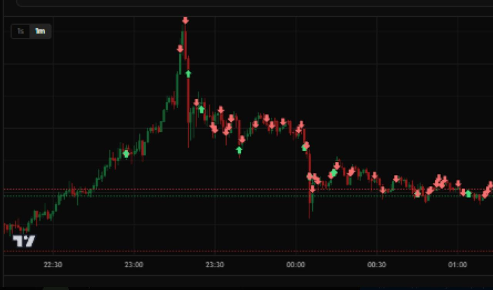
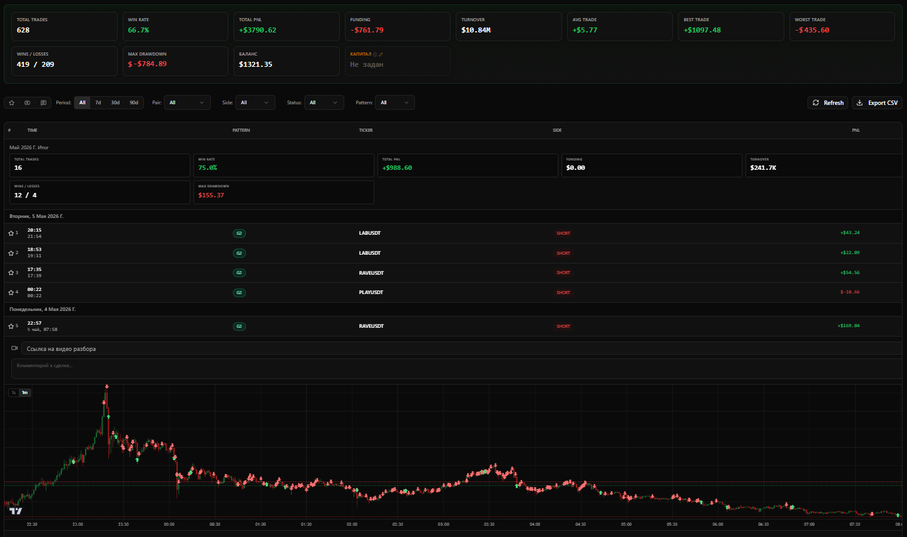

Post-pump market-making desk
Late Market Making
Адаптивный HFT market-making для post-pump рынков: учимся строить торговый деск, где execution, inventory, risk и research работают как единая система.
Не курс про угадывание движения. Практика работы с микроструктурой рынка, ликвидностью и контролем позиции в live-среде.
Block 02 / Market regime logic
Что именно будем делать на курсе
Работать не с прогнозом, а с режимом
Мы разбираем post-pump рынок как рабочую среду: где импульс уже изменил ликвидность, где появляется execution zone и как из этого собрать микроструктурное преимущество.
Отличать pump, transition и post-pump состояние рынка.
Находить execution zone и строить пассивную ликвидность.
Комбинировать агрессивное и пассивное исполнение.
Управлять инвентарем и заранее видеть деградацию риска.

pump transition post-pump execution zone
Сначала читаем состояние рынка, затем выбираем логику исполнения.
Тарифы
$1000 / $4700 / $10,000
Прайсинг будет собран отдельным блоком: Minimal, Main и VIP, с выделением основного тарифа.